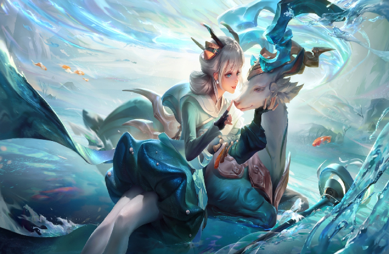

人类滥用科技导致母星面临毁灭，便用宇宙之心作为方舟的核心制作出方舟跨越若干光年降落在富有能量但尚未开发的王者大陆，曾经的人类成为了王者大陆的神明。他们创造新人类，修建十二座奇迹，并用第一座奇迹：日之塔，将埋藏在王者大陆下的能量从地底运到上面，保护他们的居所：倒悬的城市，倒悬天。其中为首的神明给自己取名叫女娲。 在人类抵达王者大陆之前，这里曾经的居住者是拥有兽型体态的生物：魔种。到来的人类（如今的神明，也叫超智慧生命体），奴役他们做修建奇迹的劳动力。诸神还挑选了一部分新人类进行力量强化实验：改造成功的成为神职者；改造失败的沦为平民，被后世称为魔道家族。随着诸神对能量的过度采集，能量发生异变，污染了劳动力们的生存间，孙悟空带领着猪八戒、牛魔等魔种起义，不过失败了。 但是污染依旧存在，女娲派后羿关闭受到污染的日之塔，但她的行为受到了以帝俊为首一些神明的反对，帝俊认为为了获得力量在所不惜。为了争夺话语权，神明之战爆发。 这场暗无天日的神明之战最后以帝俊战败而亡作为收场，神明们死伤殆尽，女娲奄奄一息，起源之地的辉煌不复存在。女娲恍惚间明白了创造与毁灭的轮回无法避免，究极力量终究不能为人所支配，她用最后的力气将方舟核心（就是宇宙之心）封印，将钥匙放在了十二座奇迹中，期待着将来会有能正确支配力量的人出现，众神陨落，象征着一个时代的终结。 转眼已是三千年，人类继续繁衍生息，创造了属于自己的文明，迎来了璀璨的英雄时代，当年的十二奇迹部分犹在，部分下落不明，昔日的神明时代几乎沦为传说。西方大陆某处，“堕世之神”帝俊因为曾经在方舟上偷偷保存了一小小块方舟核心，得以苏醒，但他只有意识不能移动，需要方舟核心来重塑机体。有一天渗透在土地里的长安城牡丹花的汁液带来了关于方舟核心封存地的线索，被帝俊选中的青年马可波罗，带着使命，踏上了东方大陆。 稷下学院的老夫子是曾经的神职者，见证过神明之战，如今他是稷下三贤者之首，大陆第一强者、王者大陆最智慧的长者。文明不能再度毁灭，要比堕世之神先找到奇迹钥匙，阻止宇宙之力被错误使用。夫子将厚望寄托于受征召的英雄。未来征程已然开启：同伴与敌人，奇迹和命运，这一次，究极的力量能否找到它正确的方向？
在游戏正式服（安卓和IOS平台）已经推出了100多位英雄，不定期也会推出新的英雄。每个英雄都有多个主动技能和1个被动技能，在匹配模式下，玩家可以使用周免英雄、体验卡英雄和已经购买的英雄参加战斗。英雄定位可分为法师、战士、坦克、刺客、射手、辅助，不同的英雄拥有不同的面板属性和技能。在王者峡谷地图中，队伍中五名成员分别担任五种分路：发育路，对抗路，中路，打野，游走。 [44]玩家开始游戏前，可以在“备战”栏中给角色配置铭文以及装备，以及在设置操作中开启自动攻击等。
职业介绍 游戏中有多个英雄持有双定位，在以下介绍的英雄中，若有双定位英雄，则按其主定位分类。例如少司缘的定位为辅助/法师（即主职业为辅助，副职业为法师），本文会将其分类至辅助，而不是法师
